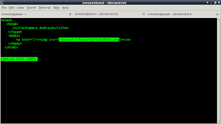

La idea es decirle a un programa el tiempo en que se tomará una foto, al cumplirse el tiempo se toma la foto y se guarda en un directorio donde luego se abre una página web en el celular que muestra la foto en el celular.
El artículo se basa en un programa hecho en ruby donde crea se crea un script que toma fotos de manera remota con el celular; el artículo del programa en ruby se encuentra acá.
Se usará la función cameraCapturePicture pasandole el archivo donde se va a guardar la foto.
El código html se muestra en la siguiente figura:

El código python se muestra a continuación:
import android
#
#Se importa la función sleep
from time import sleep
#Importar el módulo os para usar os.path.isfile y os.remove.
import os
#Mensaje del programa
title = 'Captura de una foto'
message = ('Desea capturar una foto?')
#Se crea la instancia del objeto android
droid = android.Android()
#Se crea el mensaje si se desea tomar la foto.
droid.dialogCreateAlert(title, message)
droid.dialogSetPositiveButtonText('Si')
droid.dialogSetNegativeButtonText('No')
droid.dialogShow()
#Se captura la respuesta si es positiva se pide el tiempo que se desea
#usar para tomar la foto.
#Si es negativa finaliza el programa.
respuesta = droid.dialogGetResponse()
if respuesta[1]['which'] == "positive":
tiempo = droid.dialogGetInput("Escriba el tiempo para capturar la foto","tiempo:")
#Se crea el mensaje del tiempo para ejecutar la toma de la foto.
droid.makeToast("Tiempo para tomar la foto: %s " %tiempo[1])
#Se espera el tiempo definido
sleep(int(tiempo[1]))
#Se toma la foto guardandola en el archivo latest.png.Si la imagen existe
#se borra si no se toma la foto.
if os.path.isfile("/sdcard/sl4a/scripts/latest.png") == True:
os.remove("/sdcard/sl4a/scripts/latest.png")
droid.cameraCapturePicture("/sdcard/sl4a/scripts/latest.png")
sleep(1)
droid.makeToast("Presentando la foto tomada")
sleep(2)
#Se muestra una página web donde aparecerá la foto tomada.
droid.webViewShow("file:///sdcard/sl4a/scripts/captura.html")
sleep(120)
droid.makeToast("Fin del programa")
else:
droid.makeToast('Fin del programa')
La figura muestra la ejecución del programa preguntando si desea tomar la foto.
La siguiente figura muestra que se le pide al usuario el tiempo que quiere esperar hasta que tome la foto:

En la siguiente figura se muestra la página web donde está la foto que se tomó:

El código QR del script captura.py se muestra en la siguiente figura:

El código QR de captura.html se muestra en la siguiente figura:

Una mejora al programa es que se pueda visualizar remotamente la foto tomada por medio de un servidor web en el celular con Android, se intento con el módulo en python que permite iniciar un servidor web pero por los permisos que maneja SL4A no se pudo iniciar el servidor web.
===
¡Haz tu donativo! Si te gustó el artículo puedes realizar un donativo con Bitcoin (BTC) usando la billetera digital de tu preferencia a la siguiente dirección: 17MtNybhdkA9GV3UNS6BTwPcuhjXoPrSzV
O Escaneando el código QR desde billetera:

Comments !